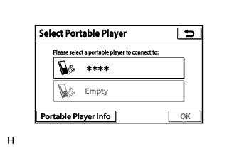
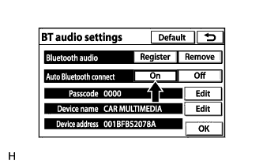

AUDIO AND VISUAL SYSTEM (w/ Multi-display) > Portable Player cannot be Connected Manually/Automatically |
| 1.CHECK CONNECTED DEVICE SETTINGS |
|  |
Display the "Select Portable Player" screen and check if the portable player is registered as a connected device.
| Result | Proceed to |
| The portable player is registered as a connected device | A |
| The portable player is not registered as a connected device | B |
|
| ||||
| A | |
| 2.CHECK SYMPTOMS |
Check the connection condition between the portable player and radio receiver assembly.
| Result | Proceed to |
| The portable player cannot be connected manually | A |
| The portable player cannot be connected automatically | B |
|
| ||||
| A | |
| 3.CHECK AUTOMATIC CONNECTION SETTINGS |
Display the "BT Audio Settings" screen and check automatic connection settings of the "Bluetooth" audio.
|  |
Check if On is displayed for "Auto Bluetooth connect" on the "BT audio settings" screen.
|
| ||||
| OK | |
| 4.CHECK PORTABLE PLAYER STATUS |
Check the status of the portable player.
Check that the portable player is in standby mode.
Check that the portable player is not connected to another device (headphones etc.).
|
| ||||
| OK | |
| 5.CHECK USING ANOTHER "BLUETOOTH" AUDIO COMPATIBLE VEHICLE OF SAME MODEL |
Check if the portable player can be connected manually/automatically on another "Bluetooth" audio compatible vehicle of the same model.
|
| ||||
| OK | |
| 6.REMOVE ADDITIONAL DEVICES WHICH USE RADIO WAVES |
Remove additional devices which use radio waves.
Check if the portable player can be connected manually/automatically.
|
| ||||
| OK | ||
| ||